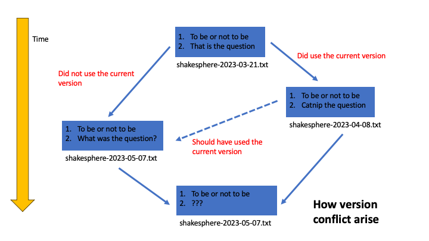
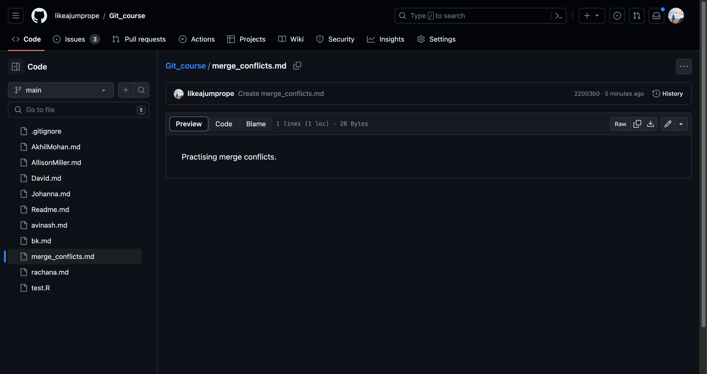
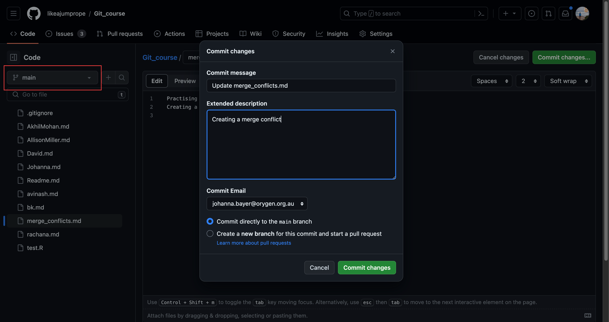
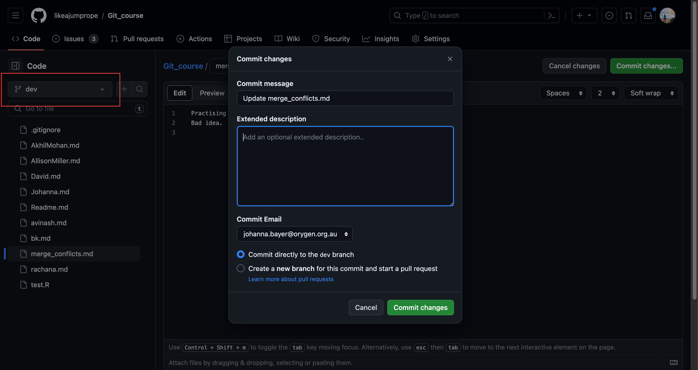
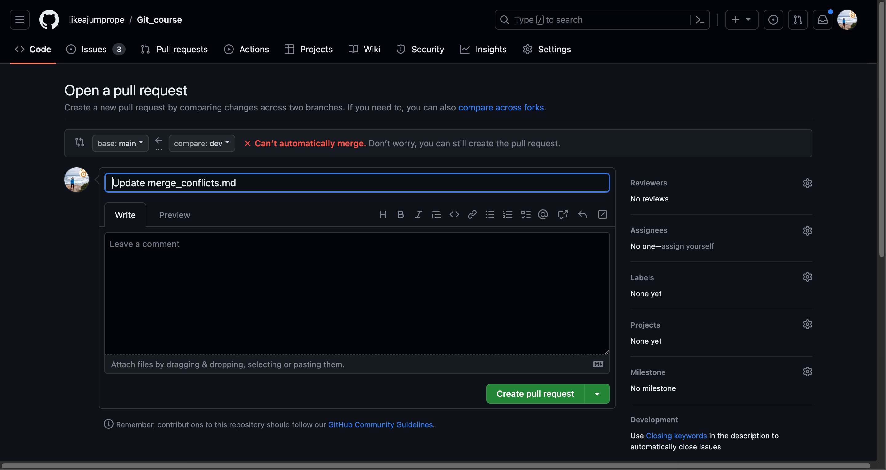
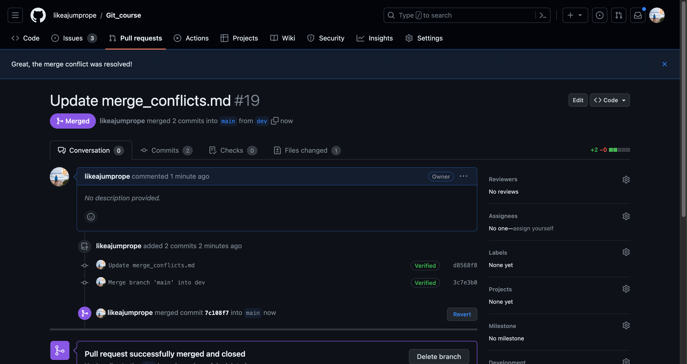

Merge conflicts
A hypothetical scenario
Git is really good at tracking changes made to documents as they move through time. Ideally, each version should fall into place somewhere in the linear history of the document. However, there are situations where versions conflict arise and it is not clear what version of a document is the most recent version.

Merge conflicts
Different edits and commits to the same file on different branches or PRs of different versions of a file result in merge conflicts. Merge conflicts require a manual resolution. Git will warn you that a PR cannot be merged automatically if merge conflicts arise. Be warned, merge conflicts can be a real headache and the best way to deal with them is to avoid them!
Create a merge conflict
Go to your online repository of Git_course. Create a file named merge_conflict.md and write in the first line: “Practicing merge conflicts”. Commit your changes to the main branch.

Click on the branch symbol with the label main and create a new branch dev from main.

Go back to the main branch. Open the merge_conflict.md by clicking on the pencil item and write on the second line: Creating a merge conflict”. Commit those changes.

Navigate to the dev branch. Open the merge_conflict.md and write on the second line: “Bad idea”. Commit those changes.

Create a PR from dev to main. Git will warn you that the branches cannot automatically be merged. Click create PR regardless. You have created a merge conflict!

Resolving the merge conflict
Merge conflicts require manual intervention and a selection of the changes that you would like to save.
- Click resolve merge conflict. You should be shown something like the following:

You can now edit the conflicting file. You have three choices:
- Only accept the changes from main, thus remove the “<<<<<< dev Bad idea ======” part.
- Only accepting the changes from dev, thus delete the “===== Creating a merge conflict >>>>> main” part
- Create a new file accepting both changes. (Delete all <<<<<< >>>>>>>> and ======).
Once you have made you choice, click “mark conflict as resolved” and commit your changes.

Avoiding merge conflicts
Merge conflicts can be a headache, thus the best way to deal with them is to avoid them.
Always sync your branches before working on them and before opening a PR.
Make small and incremental commits.